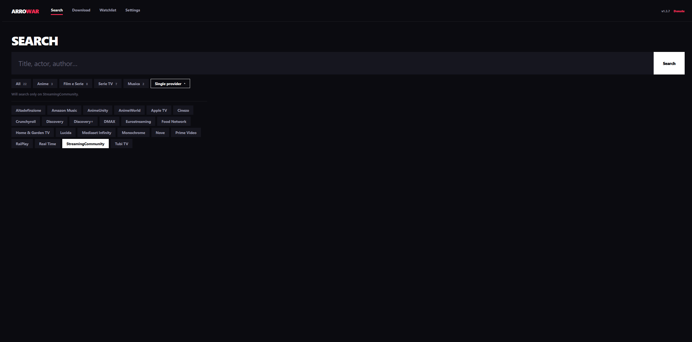
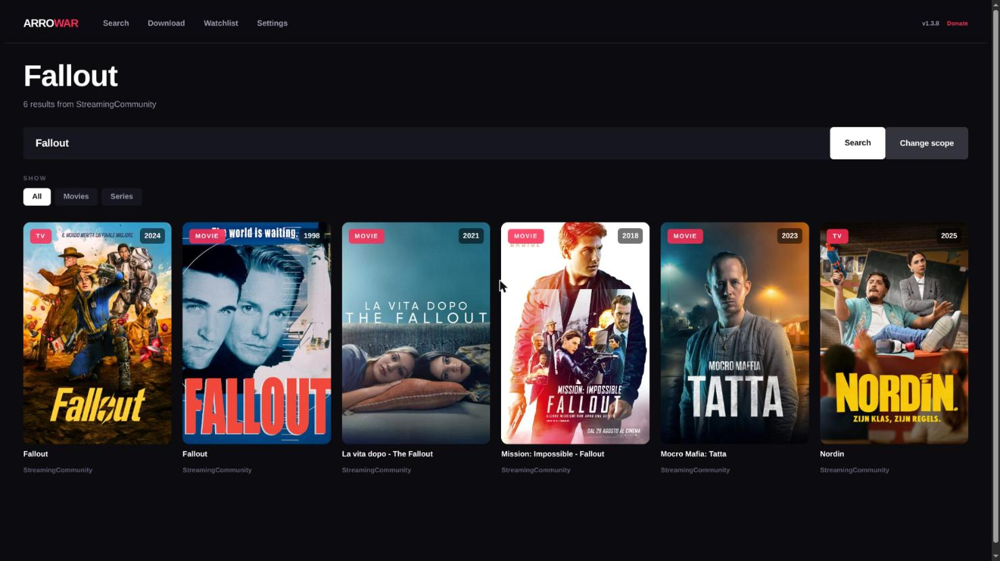
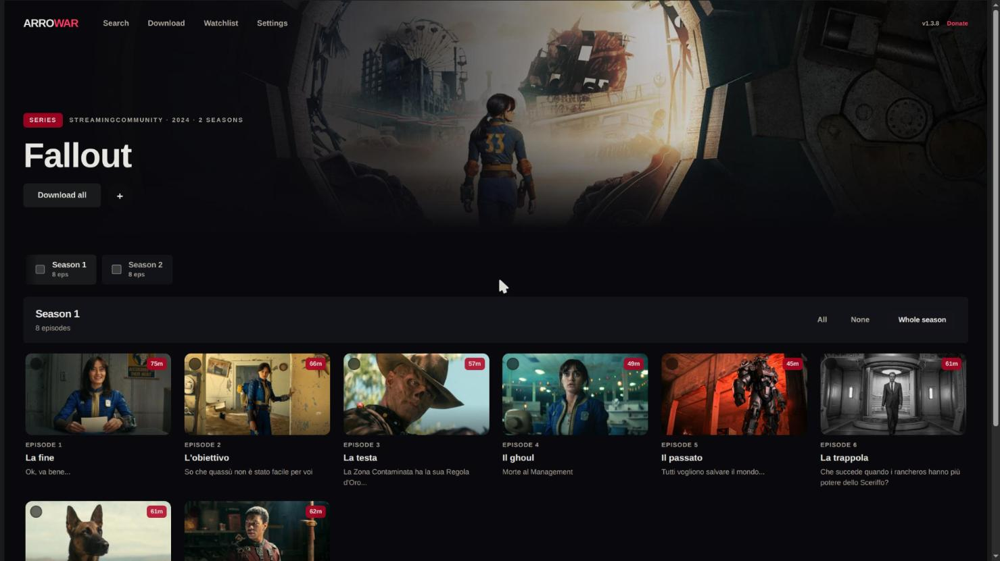
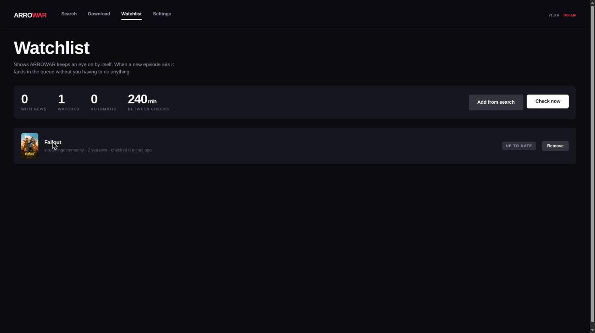
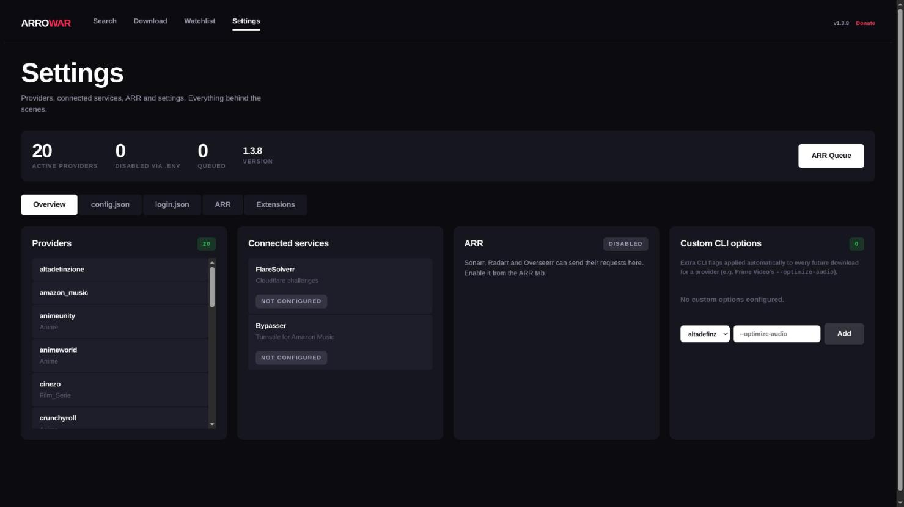
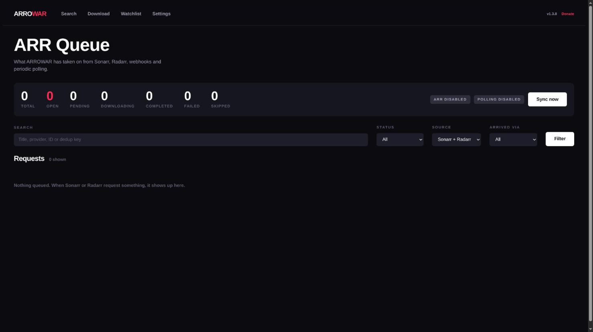

Web GUI

A web-based interface built with Django for searching and downloading content directly from your browser.
Quick Start
pip install -r GUI/requirements.txt
python GUI/manage.py migrate
python GUI/manage.py runserver 0.0.0.0:8000
Then open http://<host>:8000 in a browser. For Docker/NAS deployments see the Docker
guide and the NAS deployment guide instead of running the dev server
directly.
Tip
Poster art and TMDB metadata (search results, watchlist) require a TMDB API key — see TMDB API Key for setup. There's no in-app field for it; it's read from the environment at process start, so set it before launching (or restart the server/container after changing it).
Features
Search & download
- Home (
/) — pick a site and search for a title. - Results (
/search/) — each result can be downloaded, added to the watchlist, or (for series) expanded to show seasons and episodes via the series-detail view. - Start download (
/download/) — queues the selected movie or episodes. Track selection (video/audio/subtitle) follows the sameconfig.jsonfilters as the CLI. - Set
VIBRAVID_DISABLED_SITES(comma-separated site module names) to hide specific sites from the GUI's site list entirely — useful to disable a site for the web UI without removing it from the CLI/TUI.


Downloads dashboard
/downloads/ shows the live download queue and history:
- Live status and progress polled from
api/get-downloads/. - Stop a running download (
api/kill-download/). - Stop and clear the queue (
api/kill-and-clear-queue/). - Clear history of completed/failed entries (
api/clear-history/).
For some providers the progress bar may stay at 0% even though the download is running — see Known Issues.
Watchlist & auto-download
/watchlist/ tracks series (and movies) and can download new content automatically:
- Add a title from the search results, or remove individual items / clear the whole list. Metadata (seasons, poster, TMDB id) is fetched in the background so the UI stays responsive.
- Update all re-checks every item on demand.
- Per-item auto-download toggle (
watchlist/auto/<id>): for a series you enable it on a specific season; VibraVid then downloads newly published episodes of that season automatically. - Run now (
watchlist/auto-run/) triggers an immediate check instead of waiting for the next cycle. - Polling interval (
watchlist/auto-interval/) — how often the auto-loop checks for new episodes. Default is 4 hours (14400 s); selectable values are 5 min, 15 min, 30 min, 1 h, 6 h, 12 h, and 24 h. The interval can also be set with theWATCHLIST_AUTO_INTERVAL_SECONDSenvironment variable.

Settings / configuration editor
/settings/ is an in-browser editor for Conf/config.json and Conf/login.json:
- Edits both files in tabs, validates JSON before saving, and writes a
.backupalongside the original. ARR.max_concurrent_downloadsis applied live without a restart. Most other settings take effect after a reload (api/reload-config/, which reloads config and/or login through the config manager) or a restart of the server.- The same page also shows a live status indicator for the optional Bypasser sidecar (driven by
the
BYPASSER_URLenvironment variable) — see the Docker guide for enabling it.

Bot / remote-control API
api/bot/* is a small JSON API meant for driving VibraVid from an external bot or automation
script (this is what the Telegram bot uses under the hood) rather than the
browser UI:
POST api/bot/search/—{"query": "...", "site": "__all__" | "__cat__:<cat>" | "<site>"}→ matching results.POST api/bot/seasons/— list a series' seasons/episodes for a given result.POST api/bot/download/— start a download for a chosen result/episode.POST api/bot/sites/— list available sites/categories.POST api/bot/status/— poll progress of an in-flight download.POST api/bot/cancel/— stop a running download.POST api/bot/logs/— fetch recent log lines.
Set VIBRAVID_BOT_SECRET to require every request to carry a matching X-VibraVid-Token
header; without it set, these endpoints accept unauthenticated requests, so set it before
exposing the GUI beyond your local network.
Custom service upload
Upload a custom site module as a ZIP (api/upload-service/); it is extracted into
VibraVid/services/ and the registry is reloaded (api/registry-status/). This complements
the imp_service config key. An uploaded service only appears in the GUI site dropdown if it
ships a matching stub at GUI/searchapp/api/<service_name>.py.
In-app update
When a newer release is available the UI shows an update banner. The version check
(api/version/check/) is cached for one hour; the update action (api/version/update/)
applies it in place. For Docker one-click updates (Docker socket requirement) see the
Docker guide.
Separately, api/binaries/update/ checks FFmpeg/Bento4/Shaka Packager/dovi_tool/MKVToolNix/
Velora against AstraeLabs/Binary and re-downloads whichever is outdated — the GUI counterpart
to the CLI's --binary-update flag.
ARR stack page
/arr-stack/ is a status and control panel for the Seerr/Sonarr/Radarr integration: it lists
VibraVid's internal ARR processing queue (filterable by status/source/sync) and can trigger a
sync (api/arr/trigger-sync/). Webhook endpoints and full configuration are documented in the
ARR Integration guide.

CSRF & Reverse Proxy
When accessing the GUI from outside the local network or behind a reverse proxy, Django may reject requests due to CSRF validation failures. Configure the following environment variables as needed.
Trusted Origins
Required when requests arrive from a domain or port not matching Django's expected origin:
CSRF_TRUSTED_ORIGINS="http://127.0.0.1:8000 https://yourdomain.com"
HTTPS Forwarding
If the reverse proxy terminates SSL/TLS, forward the scheme to Django:
Apache:
RequestHeader set X-Forwarded-Proto "https"
Environment variable:
SECURE_PROXY_SSL_HEADER_ENABLED=true
Recommended Variables for Proxy Deployments
ALLOWED_HOSTS="yourdomain.com"
USE_X_FORWARDED_HOST=true
CSRF_COOKIE_SECURE=true
SESSION_COOKIE_SECURE=true